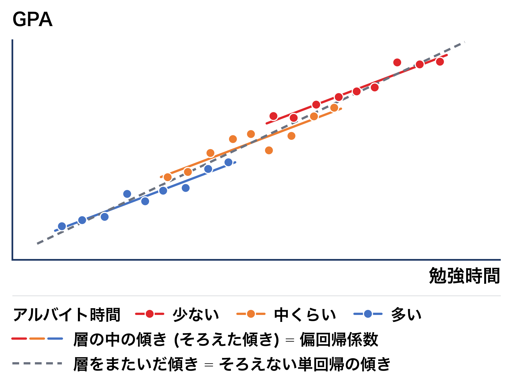

重回帰分析と偏回帰係数
単回帰分析では, 説明変数が 1 つの式で出生率と家事・育児時間の割合の関係を表しました. 説明変数が k 個のときは, 回帰式を次のように書きます.
y=\beta_0+\beta_1x_1+\dots+\beta_kx_k+\varepsilon.
このように複数の説明変数, 回帰係数を利用して目的変数を表す回帰分析を重回帰分析といいます. 基本的には, 単回帰と同じように分析することが可能ですが, いくつかの注意点があります.
まず偏回帰係数の読み方を式で確かめ, 架空の学生のデータで, 式に入れる変数によって係数が表す比較がどう変わるかを見ます. 続いて, 質的な変数をダミー変数で表す方法, 係数の単位と標準化, 説明変数どうしの関連が係数の精度に関わる多重共線性を順に扱います.
偏回帰係数とそろえる条件
母集団で, 説明変数の値を指定したときの目的変数の平均を線形式で表します. この平均を m(x_1,\dots,x_k) と書きます.
m(x_1,\dots,x_k)=\beta_0+\beta_1x_1+\dots+\beta_kx_k.
第 j 説明変数だけが 1 違い, 他の説明変数が同じ 2 つの条件を比べます. 切片と第 j 説明変数以外の項が差し引かれるので, 式が表す平均の差は次のようになります.
m(x_1,\dots,x_j+1,\dots,x_k)-m(x_1,\dots,x_j,\dots,x_k)=\beta_j.
重回帰式の各説明変数に付く係数を偏回帰係数と呼びます. 線形の重回帰式では, 他の説明変数が同じ個体どうしで, その説明変数が 1 単位違うときの, 式が表す平均の差です.
架空の学生のデータは, 次の仕組みで作っています. 奨学生のときに 1, 非奨学生のときに 0 をとる変数を x_1, 週あたりの勉強時間を x_2, 週あたりのアルバイト時間を x_3 とします. まず, 学生ごとに潜在得点 y^\ast を次の式で作ります.
y^\ast = 0.5 + 0.6 x_1 + 0.25 x_2 - 0.1 x_3 + \varepsilon^\ast.
\varepsilon^\ast は学生ごとに独立に加える, 平均 0, 標準偏差 0.1 の正規分布の乱数です. 観測する GPA は, 潜在得点が 0 未満なら 0, 4 より大きければ 4 とし, その間では潜在得点と同じ値にします. この操作を打ち切りと呼びます. 打ち切りのため, 観測 GPA の条件つき平均は直線になりません. 例えば潜在得点が 4 を超えやすい条件では, 観測 GPA の平均は 4 に近づきます. そのため, 観測 GPA に当てはめた式の係数は, 潜在得点の式の係数とは異なります.
勉強時間だけを使う単回帰では, 勉強時間の異なる学生どうしを比べます. 奨学生区分やアルバイト時間も候補にすると, 何を式に加えるかで, 比べる学生の条件が変わります. 平均 GPA の差を求めるときは, どの条件が同じ学生を比べたいかで式を決めます. 新しい学生への予測や次に確かめる仮説の探索では, 目的ごとの変数の選び方を使います.
観測 GPA を目的変数とし, x_1, x_2, x_3 をすべて入れた重回帰式で平均 GPA を近似します.
m(x_1,x_2,x_3)=\beta_0+\beta_1x_1+\beta_2x_2+\beta_3x_3.
奨学生区分とアルバイト時間をそろえて, 勉強時間だけ週 1 時間長い学生との平均 GPA の差を式で求めます.
m(x_1,x_2+1,x_3)-m(x_1,x_2,x_3)=\beta_2.
アルバイト時間を式に入れる場合と入れない場合
この仕組みで作った架空の学生 20 万人分の観測 GPA に, 奨学生区分と勉強時間を共通に含む 2 つの式を当てはめました. 表の数値は, 架空の母集団での最小二乗係数の近似です.
| 式に入れる説明変数 | 式が表す平均 GPA の近似 | 勉強時間の係数が表す比較 |
|---|---|---|
| 奨学生区分, 勉強時間, アルバイト時間 | 0.684+0.531x_1+0.219x_2-0.088x_3 | 奨学生区分とアルバイト時間が同じ学生どうし. 勉強時間が週 1 時間長い学生ほど, 平均 GPA は式の上で約 0.219 高い |
| 奨学生区分, 勉強時間 | -1.069+0.531x_1+0.272x_2 | 奨学生区分が同じ学生どうし. アルバイト時間には条件を付けない. 勉強時間が週 1 時間長い学生ほど, 平均 GPA は式の上で約 0.272 高い |
次の図は, 表の 2 つの係数の違いを, 奨学生区分を固定し, アルバイト時間で学生を 3 つの層に分けて描いた模式図で, 点は実データではありません. この架空のデータでは, アルバイト時間が長い学生ほど勉強時間が短い傾向があります (散布図は学習用データの散布図と相関にあります). また, 表の 1 行目のアルバイト時間の係数が負なので, 同じ勉強時間ならアルバイト時間が長いほど平均 GPA は低くなります. 層の中に引いた直線の傾きはアルバイト時間をそろえた比較にあたり, 表の 1 行目の勉強時間の係数に対応します. 層を区別せずに 1 本の直線を引くと, 勉強時間の長い学生にはアルバイト時間の短い学生が多いので, アルバイト時間の違いによる平均 GPA の差も傾きに入ります. その結果, 傾きは層の中の傾きより大きくなり, これが表の 2 行目の勉強時間の係数にあたります.

例えば, 同じ奨学生区分で週 10 時間と週 11 時間勉強する学生を比べます. 両方のグループを週 14 時間アルバイトする学生にそろえるなら, 使うのは表の 1 行目の式です. アルバイト時間を問わずに週 10 時間と週 11 時間の学生を比べるなら, 表の 2 行目の式を使います. どちらの係数を報告するかは, どの条件をそろえた比較が知りたいかで決まります.
「勉強時間を増やせば GPA が上がる」という因果の主張をするには, 入れる変数を因果の関係についての仮定から決める必要があります. 学生に勉強時間を増やす介入をした場合にどうなるかは, 因果推論で扱います.
推測に使う説明変数は, どの条件をそろえるかという問いに沿って, データを見る前に決めます.
後退消去などのステップワイズ法で同じデータから変数を選んでから区間や P 値を通常の方法で計算すると, 選択の手順が計算に入らず, 予定した被覆率や有意水準を保てないことがあります.
表の 2 つの式には, いずれも奨学生区分が入っています. この区分を表す x_1 の係数は, どの学生どうしの平均 GPA の差にあたるでしょうか.